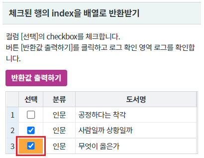
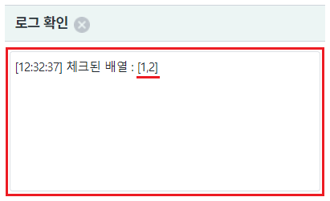
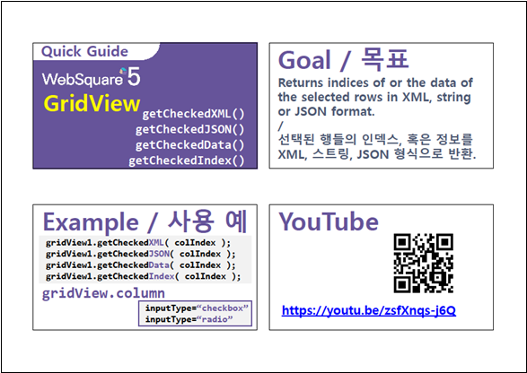

GridView의 컬럼 속성 inputType이 checkbox일 때, checkbox가 체크된 행의 index를 배열로 반환 받는 예제입니다. GridView의 함수 getCheckedIndex를 사용합니다.
체크된 행의 index을 배열로 반환받기
[브라우저(Chrome) 실행 예시]

버튼 반환값 출력하기를 클릭합니다.
영역 [로그 확인]의 textarea 또는 브라우저 개발자 도구의 콘솔에 JSON 문자열이 출력됩니다.
[브라우저(Chrome) 실행 예시 - 로그 확인]

[배열 문자열 예시]
[1,2]
원하는 시점에 GridView의 함수 getCheckedIndex를 이용하여 스크립트를 작성합니다.
[소스 코드 예시]
//예제 파일에서는 스크립트 scwin.btn_ex1_onclick에 작성되어 있습니다. var arrIndex; //GridView grd_exam1의 컬럼 chk_1의 체크된 행 index를 배열로 반환 받기 //파라미터는 컬럼의 id와 indexd를 사용할 수 있습니다. //일반적으로 id를 사용합니다.(index는 컬럼이 추가/삭제되면 변경되기 때문입니다.) arrIndex = grd_exam1.getCheckedIndex("chk_1");
getCheckedIndex( colIndex )
[웹스퀘어5 SP5 개발 가이드] GridView
링크 : https://docs1.inswave.com/sp5_user_guide/bc10c1b82c9a2a0b#e1c4658baf7e726f
[웹스퀘어5 SP5 개발 가이드] GridView inputType="checkbox"
링크 : https://docs1.inswave.com/sp5_user_guide/86bdcf48029b958b#3e94eba8977de29e
[웹스퀘어5 SP5 개발 가이드] GridView inputType="checkbox" 혹은 inputType="radio" 열에서 체크한 행의 인덱스 및 데이터 확인
링크 : https://docs1.inswave.com/sp5_user_guide/86bdcf48029b958b#7c6e0da78d6d4f6a
GridView inputType="checkbox" 혹은 inputType="radio" 열에서 체크한 행의 인덱스 및 데이터 확인
링크 : https://youtu.be/zsfXnqs-j6Q
